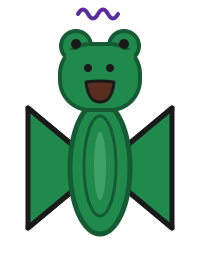

The Legend of Mr. Froggles
This is the legend of the flying frog that is magical and it can fly.
His name is Mr. Froggles. He has a big smile and wings shaped like a bowtie. Whenever a friend needs help, he flies over and casts a purple enchantment, and something little turns into just what they need.

The Home Pond
Mr. Froggles lives at the Home Pond, a sunny pond with lily pads and tall cattails.
One day, Pebble the snail crawled onto a little rock and got stuck, with water all around her. Mr. Froggles enchanted the rock, and it became a lily pad that floated her back to shore.
Wiggles the tadpole wanted to hop, but all he could do was wiggle his tail. Mr. Froggles enchanted him, and he grew legs and became a little frog!
Bumble the bee was hungry, but the water lily was shut tight. Mr. Froggles enchanted it, and it bloomed, full of sweet nectar.

The Whispering Woods
Next, Mr. Froggles flew to the Whispering Woods, where round trees grow and the air is full of whispers.
Hazel the hedgehog couldn’t cross the stream to get to her family. Mr. Froggles enchanted a little leaf, and it grew into a bridge.
Olive the owl had tumbled out of her nest. Mr. Froggles enchanted the mushroom she sat on, and it grew up, up, up, all the way to her nest.
Nutmeg the squirrel had no acorns for winter. Mr. Froggles enchanted the big oak tree, and it grew so many acorns that one fell right into her paws.

The Cloud Kingdom
Then he flew high into the sky, to a little castle on a big fluffy cloud.
A rain cloud wouldn’t stop raining on Pip the bluebird, and her feathers were too wet to fly. Mr. Froggles enchanted the rain cloud, and it turned into a rainbow.
Ginger the fox’s kite wouldn’t fly, because there was no wind. Mr. Froggles enchanted the kite, and it soared into the sky on a breeze.
Lulu the unicorn had no wings, only one little feather. Mr. Froggles enchanted the feather, and it became wings, and she flew up over the castle.

The Moon Cave
When night came, Mr. Froggles flew to the Moon Cave, under a crescent moon.
Flicker the firefly’s light had gone out, and she couldn’t find her way home. Mr. Froggles enchanted the dark cave, and it glowed.
Twinkle the star had tumbled out of the sky. Mr. Froggles enchanted the moonlight, and a moonbeam carried her back up.
Dot the bat needed a branch to sleep on, but there was only a tiny twig. Mr. Froggles enchanted the twig, and it grew into a tree, and Dot hung upside down and fell fast asleep.
The End
Everyone was happy again. Mr. Froggles did a twirl in the sky and flew off to find more friends who need help.
And that is the legend of Mr. Froggles, the flying frog that is magical and it can fly.